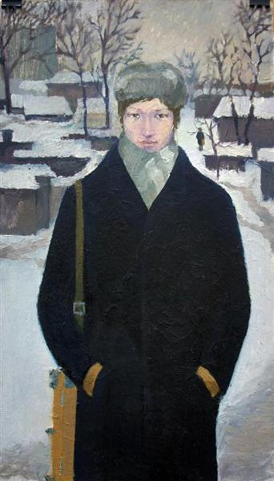

Гнилицький цією роботою написав картину в картині, де Інфанта – лише віддалений знак реальної доньки іспанського короля, яку видали заміж у 15 років. Дата стврення: 1990 рік.
У творчості Гнилицького багато "обманок". Коли ми дивимося на величезну склянку, вона вражає своєю монументальністю і змушує замислитися, чому художник надає таку вагу, здавалося б, цілком банальному предмету. Дата стврення: 2007 рік.
Художник цвіковічував дрібні побутові предмети, збільшуючи їх на картинах та вириваючи з оточуючого світу. Жанр картини- фігуративний живопис, пейзаж. Оригінальна назва: Газвода Дата стврення: 2006 рік. Cтиль: Нео-поп, Гиперреалізм.
